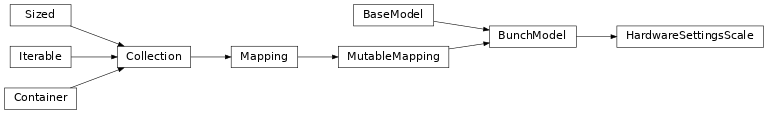

iblrig.pydantic_definitions.HardwareSettingsScale

- class iblrig.pydantic_definitions.HardwareSettingsScale[source]
-
- model_computed_fields: ClassVar[Dict[str, ComputedFieldInfo]] = {}
A dictionary of computed field names and their corresponding ComputedFieldInfo objects.
- model_config: ClassVar[ConfigDict] = {}
Configuration for the model, should be a dictionary conforming to [ConfigDict][pydantic.config.ConfigDict].
- model_fields: ClassVar[Dict[str, FieldInfo]] = {'COM_SCALE': FieldInfo(annotation=Union[str, NoneType], required=False, default=None)}
Metadata about the fields defined on the model, mapping of field names to [FieldInfo][pydantic.fields.FieldInfo] objects.
This replaces Model.__fields__ from Pydantic V1.